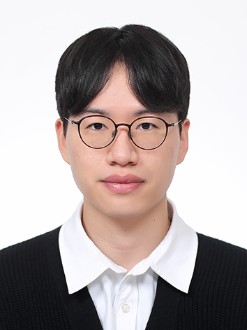

I am a first-year Ph.D. student in Computer Science at Purdue University, advised by Prof. Vamsi Addanki.
My research focuses on ML Systems. My research background is in computer architecture and large-scale AI models. My research interest is in ML systems, with a current focus on Prefill-Decode (PD) disaggregation and inference scheduling. I am particularly interested in the efficient deployment of large-scale AI models in large-scale data centers, considering both software and hardware aspects.
Ph.D. in Computer Science, 2026–Present
Advised by Prof. Vamsi Addanki
M.S. in Electrical and Computer Engineering, 2022–2024
Advised by Prof. Hyuk-Jae Lee
B.S. in Electrical Engineering, 2014–2021
Suhyeok Jang, Dongyoung Kim, Changyeon Kim, Youngsuk Kim, Jinwoo Shin
arXiv, 2025
Paper →Youngsuk Kim, Junghwan Lim, Hyuk-Jae Lee, Chae Eun Rhee
IEEE Access, 2025
Paper →Research Intern, Aug 2025 – Jan 2026
Research Intern, Mar 2019 – Jul 2019
CS 422 Computer Networks, Fall 2026–Present
Currently assisting lectures and mentoring students.
Graduation Project for Undergraduate Students, Spring & Fall 2023
400.018 Creative Engineering Design, Fall 2022–2023
Seoul National University, Mar 2023
KAIST, Aug 2021
B.S. in Electrical Engineering